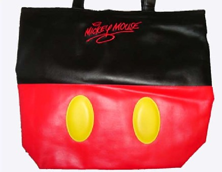

Disney and Star Wars are two counterparts that work amazingly well together, and have brought us many great adventures. That's why in 2000 and 2004, members of the NYLine staff set a course for Florida to attend Star Wars Weekends at Walt Disney World. While we were in between rides on the Star Tours Star Speeder 3000 we picked up several fantastic and rare items for donation to our eBay auction benefiting the Starlight Starbright Children's Foundation.
First up, we will be auctioning off one Jedi Mickey Plush Beanie by itself as its own auction item. The item is brand new, in mint condition, with the tag on.
The next item will be a fantastic lot of Star Wars Weekends items, which will be going up for bids on April 30th. This lot includes:
The Jedi Mickey plush beanie from Star Wars Weekends 2004 has become a highly sought after item. This product was available exclusively at Walt Disney World resorts during the Star Wars Weekends events in 2004. Embroidered on the bottom of his left foot is the "STAR WARS Weekends" logo, and on his right is displayed the year 2004. He measures approximately 9 inches in height, and comes with removable jedi robe. This item is ibrand new, in mint condition with the tag on, and was limited to 3000 produced.

The official Star Wars Weekends 2000 poster gave us this great image of a lightsaber cutting out the image of the iconic Mickey Mouse ears. This poster is brand new, and was only available at Disney-MGM Studios in 2000.
The exclusive Duel Collector Pin was limited to 1000 at the 2004 weekends. It depicts the classic duel between Obi-Wan Kenobi and Darth Vader from the original Star Wars - Episode IV: A New Hope.
Lastly, we are adding a beautiful, high-quality Mickey Mouse bag that has special significance to me personally. In 2000, myself, Steve Lorenzo, and Matt Simantov took part in a Star Tours "Ride-A-Thon". Over the course of 6 hours we rode the Star Tours motion simulator 31 consecutive times, and when the dust settled...there were 30 of us left. A trivia contest was held to decide the final winner, in which I came in second. The question I got wrong (after three days without sleep and 6 hours of Star Tours), was what the original budget for ANH was. I said $15 million, confusing it with the Special Edition budget. The answer, which I will never forget, was $10 million. For winning the second prize, I received this lovely Mickey Mouse bag, which I have not been able to find anywhere else. It features Mickey Mouse's "shorts" design and has the words "Mickey Mouse" embroidered on it.

For a recap of all auction items announced so far, be sure to visit our auction page and auction item picture gallery.
Be sure to keep checking nyline.org for the next auction item description!